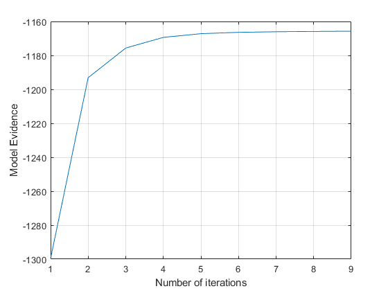
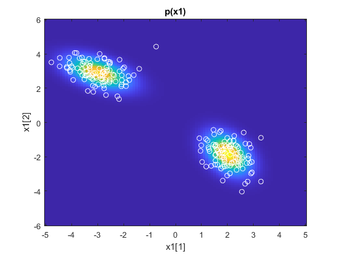
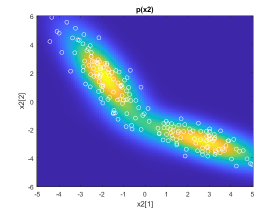
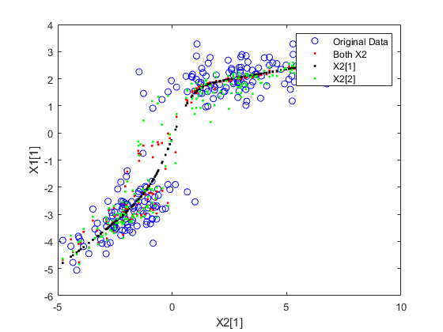
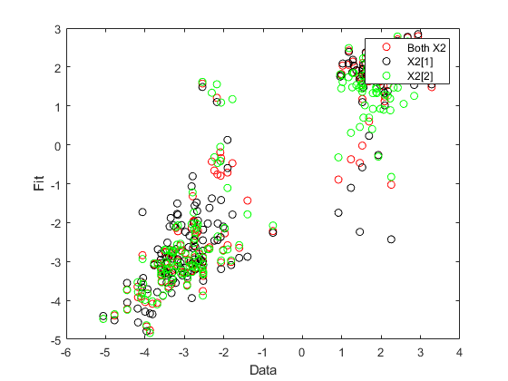

clear all
close all
N = 100;
z = randn(1,N);
W1{1} = [0.5 -0.3]';
W2{1} = [1 -2]';
W1{2} = [-0.3 0.5]';
W2{2} = [-2 1]';
mu1{1} = [-3 3]';
mu2{1} = [-2 2]';
mu1{2} = [2 -2]';
mu2{2} = [3 -3]';
sigma = 0.5;
X1 = []; X2 = [];
for m = 1:2,
X1new = W1{m}*z + mu1{m}*ones(1,N) + sigma*randn(2,N);
X2new = W2{m}*z + mu2{m}*ones(1,N) + sigma*randn(2,N);
X1 = [X1, X1new];
X2 = [X2, X2new];
end
cca = vbcca (X1,X2,1,2);
for m=1:2,
disp(sprintf('CLUSTER %d',m));
disp('Data source 1:');
disp('True W Estimated W');
disp([W1{m},cca.W1{m}]);
disp('True mean Estimated mean');
disp([mu1{m},cca.mu1{m}]);
disp('Data source 2:');
disp('True W Estimated W');
disp([W2{m},cca.W2{m}]);
disp('True mean Estimated mean');
disp([mu2{m},cca.mu2{m}]);
end
figure
plot(cca.Fhist);
ylabel('Model Evidence');
xlabel('Number of iterations');
grid on
rx=5;ry=6;
S.xmin=-rx;S.xmax=rx;S.dx=0.1;
S.ymin=-ry;S.ymax=ry;S.dy=0.1;
h2 = vbcca_marginal_2D (cca,S,X1,X2);
con.Gamma1 = [1 0];
con.Gamma2 = eye(2);
for n=1:size(X2,2),
c1_both(n) = vbcca_cond_subspace (cca,X2(:,n),con);
end
con.Gamma1 = [1 0];
con.Gamma2 = [1 0];
for n=1:size(X2,2),
c1_first(n) = vbcca_cond_subspace (cca,X2(1,n),con);
end
con.Gamma1 = [1 0];
con.Gamma2 = [0 1];
for n=1:size(X2,2),
c1_second(n) = vbcca_cond_subspace (cca,X2(2,n),con);
end
figure
plot(X2(1,:),con.Gamma1*X1,'bo');
hold on
plot(X2(1,:),c1_both,'r.');
plot(X2(1,:),c1_first,'k.');
plot(X2(1,:),c1_second,'g.');
xlabel('X2[1]');
ylabel('X1[1]');
legend({'Original Data','Both X2','X2[1]','X2[2]'});
figure
plot(con.Gamma1*X1,c1_both,'ro');
hold on
plot(con.Gamma1*X1,c1_first,'ko');
plot(con.Gamma1*X1,c1_second,'go');
xlabel('Data');
ylabel('Fit');
legend({'Both X2','X2[1]','X2[2]'});
Replicate 1, 4 iterations, total sum of distances = 1176.46.
Best total sum of distances = 1176.46
Replicate 1, 3 iterations, total sum of distances = 1176.46.
Best total sum of distances = 1176.46
Replicate 1, 2 iterations, total sum of distances = 1176.46.
Best total sum of distances = 1176.46
Replicate 1, 1 iterations, total sum of distances = 1176.46.
Best total sum of distances = 1176.46
Replicate 1, 2 iterations, total sum of distances = 1176.46.
Best total sum of distances = 1176.46
Replicate 1, 3 iterations, total sum of distances = 1176.46.
Best total sum of distances = 1176.46
Replicate 1, 2 iterations, total sum of distances = 1176.46.
Best total sum of distances = 1176.46
Replicate 1, 1 iterations, total sum of distances = 1176.46.
Best total sum of distances = 1176.46
Replicate 1, 3 iterations, total sum of distances = 1176.46.
Best total sum of distances = 1176.46
Replicate 1, 3 iterations, total sum of distances = 1176.46.
Best total sum of distances = 1176.46
Replicate 1, 3 iterations, total sum of distances = 1176.46.
Best total sum of distances = 1176.46
Replicate 1, 1 iterations, total sum of distances = 1176.46.
Best total sum of distances = 1176.46
Replicate 1, 3 iterations, total sum of distances = 1176.46.
Best total sum of distances = 1176.46
Replicate 1, 2 iterations, total sum of distances = 1176.46.
Best total sum of distances = 1176.46
Replicate 1, 2 iterations, total sum of distances = 1176.46.
Best total sum of distances = 1176.46
Replicate 1, 1 iterations, total sum of distances = 1176.46.
Best total sum of distances = 1176.46
Replicate 1, 1 iterations, total sum of distances = 1176.46.
Best total sum of distances = 1176.46
Replicate 1, 2 iterations, total sum of distances = 1176.46.
Best total sum of distances = 1176.46
Replicate 1, 4 iterations, total sum of distances = 1176.46.
Best total sum of distances = 1176.46
Replicate 1, 2 iterations, total sum of distances = 1176.46.
Best total sum of distances = 1176.46
Replicate 1, 1 iterations, total sum of distances = 1176.46.
Best total sum of distances = 1176.46
Replicate 1, 4 iterations, total sum of distances = 1176.46.
Best total sum of distances = 1176.46
Replicate 1, 1 iterations, total sum of distances = 1176.46.
Best total sum of distances = 1176.46
Replicate 1, 2 iterations, total sum of distances = 1176.46.
Best total sum of distances = 1176.46
Replicate 1, 1 iterations, total sum of distances = 1176.46.
Best total sum of distances = 1176.46
Iteration8, Lower bound:-1165.8614
Iteration9, Lower bound:-1165.7451
Relative change smaller than the tolerance after9 iterations.
CLUSTER 1
Data source 1:
True W Estimated W
0.5000 -0.6129
-0.3000 0.3773
True mean Estimated mean
-3.0000 -2.9664
3.0000 2.8967
Data source 2:
True W Estimated W
1.0000 -0.9447
-2.0000 1.8458
True mean Estimated mean
-2.0000 -1.8712
2.0000 1.7331
CLUSTER 2
Data source 1:
True W Estimated W
-0.3000 0.2571
0.5000 -0.5835
True mean Estimated mean
2.0000 2.0152
-2.0000 -1.8357
Data source 2:
True W Estimated W
-2.0000 1.7499
1.0000 -0.9801
True mean Estimated mean
3.0000 2.7065
-3.0000 -2.8431
    